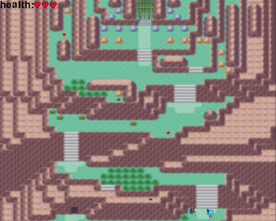

|
OXO ou Tic Tac Toeüìú Explications:
Salut !
üöÄ But du jeux:
üõ† Technologies utilis√©es:
Le jeu a été réalisé en Python en utilisant Tkinter, un module standard permettant de créer des interfaces graphiques utilisateurs (GUI).
|
|---|
Enigmatic Gameüìú Explications:
Enigmatic Game,
Le jeu est r√©alis√© de ma propre main, je programme l'int√©gralit√© du jeu en python avec le package Pygame. üöÄ But du jeux:
üõ† Technologies utilis√©es:
|
 |
|---|

|
Histoire √©criteüìú Explications:
Histoire écrite,
Ce jeu est l'un de mes premiers projets que j'ai fais, c'est donc pour ça que le jeu n'est pas plus complexe que les deux précédents.
üöÄ But du jeu :
üõ† Technologies utilis√©es:
La console est une fenêtre où vous pouvez saisir des commandes complexe ou non. l'invite de commande ou Cmd pour "commandes" en anglais est principalement utilisée pour gérer des dossiers, des fichiers, les paramètres de l'ordinateu, etc.
|
|---|
Bomb Warsüìú Explications:
L'histoire de ce jeux est rigolo car ce jeux à été fait sur un coup de tête,
üöÄ But du jeu :
Le but du jeux est simple, vous devez avec les touches [zqsd] ou les flèches directionelles,
üõ† Technologies utilis√©es:
Pour ce projet j'utilise donc Pygame qui est un package comme expliquer plus haut pour créée de simple jeux et interface.
|

|
|---|